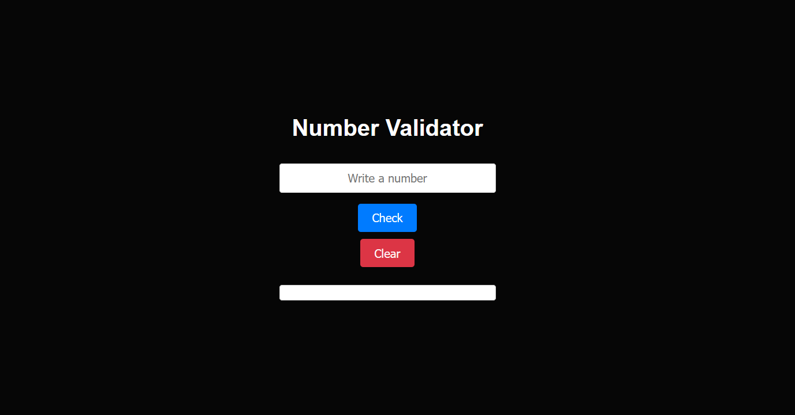
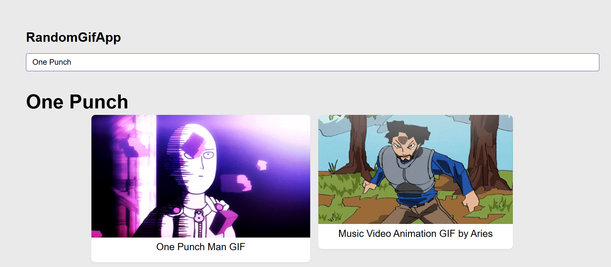

Jose Tomas Ruiz Vidal
Full Stack Web Developer
Mi camino hacia el desarrollo web
Soy historiador de profesión, graduado de la Pontificia Universidad Católica de Chile, pero hace unos 4 o 5 años, decidí reinventarme y explorar nuevas áreas. Durante la pandemia, comencé a trabajar en Huawei, donde, gracias a mi esfuerzo, logré ascender hasta el cargo de manager. En 2023, tomé la decisión de postular a una visa Working Holiday para Alemania, donde trabajé en restaurantes mientras ahorraba dinero para estudiar programación. A mi regreso a Chile en 2024, comencé un bootcamp de desarrollo web y, al finalizar, profundicé mis conocimientos en JavaScript mediante un certificado. Ahora, con una sólida base en programación, estoy emocionado de compartir mis experiencias y aprendizajes a través de este blog, mientras continúo mi camino como desarrollador web.
Mis Proyectos

Arsty
Plataforma con modelo MVC creada con Ruby on Rails, similar a un marketplace donde las personas pueden comprar y vender arte, ya sea amateur o profesional. Esta aplicacion permite adquirir arte en tiempo real, en donde cada usuario puede crear su perfil y empezar a vender o comprar arte.
Github code!
Buddfit challenge
Programa para entrenar con amigos y personas de todo el mundo. Creada con Ruby on Rails, esta aplicación permite subir fotos, dejar comentarios y llevar un registro de tus actividades de manera fácil y entretenida. Ha sido desplegada en la web utilizando Heroku.
Ver más
Regex number validator
Este programa es un validador simple pero eficaz de números de teléfono de Estados Unidos. Está desarrollado con HTML, CSS y JavaScript, utilizando expresiones regulares para verificar la validez de los números ingresados.¡Siéntete libre de copiarlo y adaptarlo según tus necesidades!
Ver más
Random GifApp
Esta aplicación web permite buscar y explorar GIFs de forma rápida usando la API de Giphy. Desarrollada con React, ofrece una interfaz dinámica y fácil de usar, garantizando una experiencia fluida en cualquier dispositivo para que el usuario tenga un experiencia divertida.
Ver más